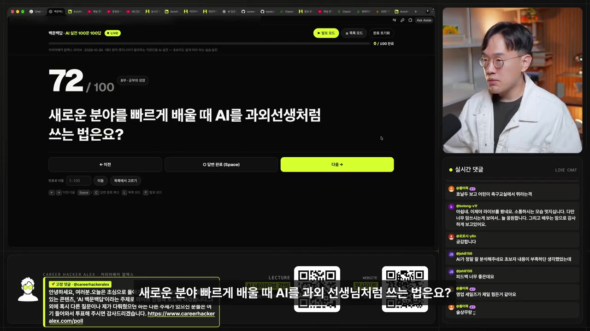
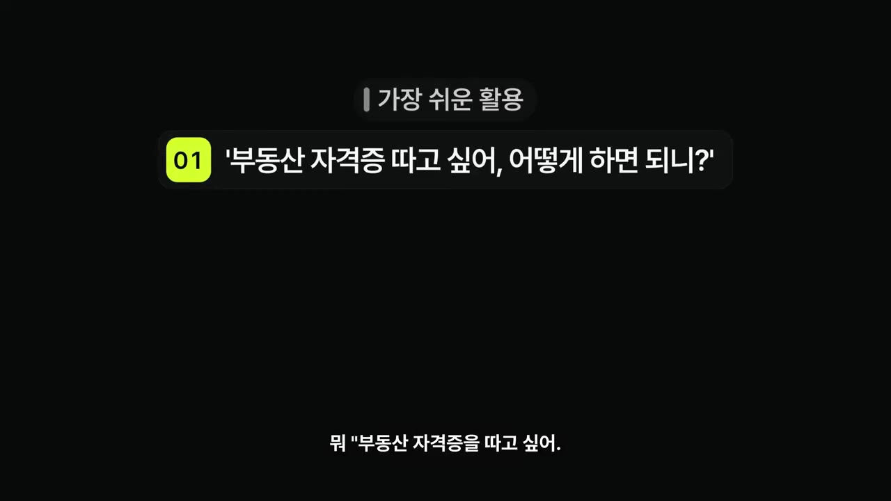
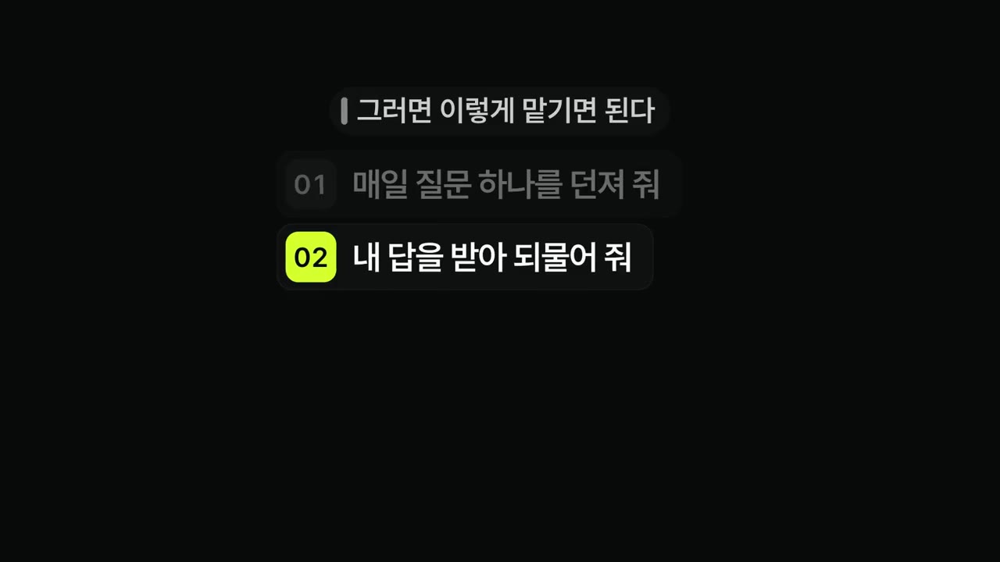
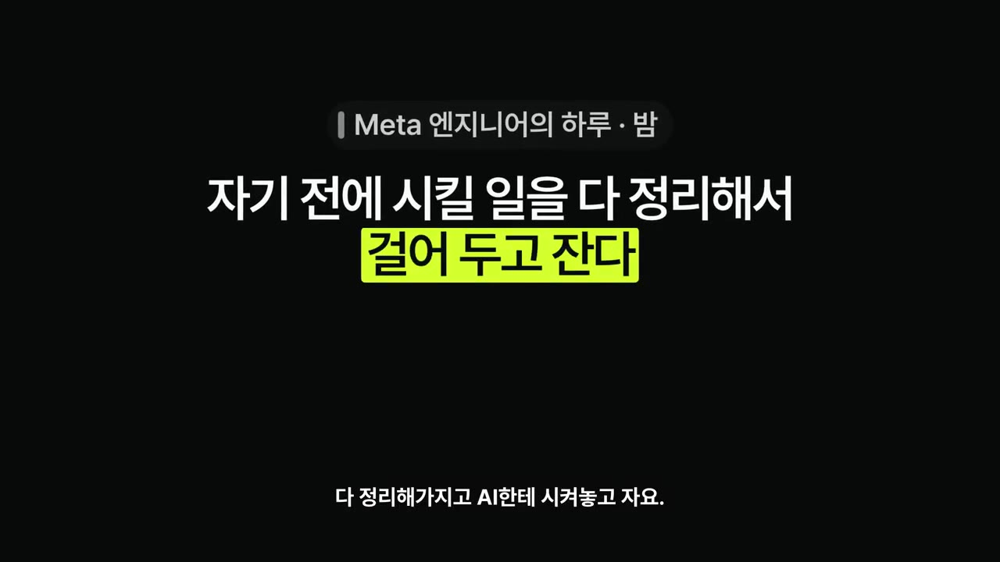
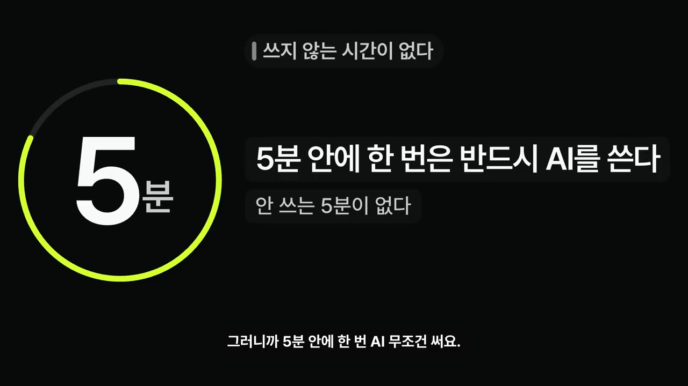

한눈에 보기
- 메타 엔지니어 알렉스는 하루 내내 AI와 일한다. 아침에 AI 보고서를 받고, 낮에는 회의 결과를 AI에 넘기고, 자기 전에는 밤새 할 일을 맡겨 두고 잔다.
- AI가 나보다 잘하는 일이 늘어도 사람이 전하는 가치는 남는다. 불완전함, 사람의 고민과 감성, 어떤 일을 추구할지 정하는 판단이 그것이다.
- 새 분야는 AI에게 "과외 선생님이 되어 달라"고 말하면 커리큘럼부터 짜 준다.
- AI에 물어보다 실력이 주는지는 답을 이해하느냐에 달렸다. 복사·붙여넣기만 하면 늘지 않는다.
- 질문하는 힘도 AI와 매일 30분 함께 훈련할 수 있고, 가장 가치 있는 공부는 철학적인 질문이라고 말한다.
이런 분께 도움이 됩니다
- "AI가 다 하면 내 공부와 일은 무슨 의미인가" 하는 불안이 있는 직장인.
- AI를 답 받는 도구에서 공부 파트너·업무 위임 대상으로 넓히고 싶은 분.
핵심 내용
AI 시대에도 남는 사람의 가치
- 알렉스는 "AI가 나보다 무조건 잘하는데, 강의를 하면 내 가치는 뭘까"라는 고민을 직접 했다고 말한다. 에이전트 강의를 만들면서 느꼈다. (0:00)
- 시청자가 듣고 싶은 것은 완벽한 정보가 아니라 알렉스라는 사람이 무엇을 고민하고 어떻게 이해하는지다.
- 완벽하지 않은 것의 미덕, 사람만 전할 수 있는 메시지와 감성이 가치가 된다.
- 일에서는 어떤 일과 어떤 가치를 추구할지 정하는 것이 중요해진다.
- 일론 머스크는 인간 노동의 가치가 사라질 것으로 본다는 질문이 나왔다. 알렉스는 같은 걱정을 하기 때문에 더 열심히 한다고 답한다.
💡 AI가 정보를 완벽하게 줄수록, 사람은 "무엇을 추구할지"를 정하는 쪽에서 가치를 만든다.
AI를 과외 선생님으로 쓰기
- 방법은 그대로 말하는 것이다. 예: "에이전트 메모리를 배우고 싶어. 앞으로 과외 선생님으로서 내가 공부하도록 도와줘." 그러면 커리큘럼 등을 알아서 만들어 준다. (1:35)

- 영어 공부는 보이스 모드를 켜고 "원어민 과외만큼 공부하고 싶어, 영어 공부 시작하자"라고 하면 된다.
- 자격증도 "부동산 자격증을 따고 싶어, 어떻게 하면 돼?"처럼 물으면 방법을 정리해 준다.

- 책을 AI와 함께 읽으면 물어볼 상대가 생긴다. 다 읽은 뒤 "네가 저자라고 생각하고 내 질문에 답해 줘"라고 할 수 있다. (2:25)
다 물어보면 실력이 줄까
- 답은 이해 여부에 달렸다. 답을 하나도 이해하지 않고 복사·붙여넣기만 하면 늘지 않는다. (2:25)
- 알렉스의 견해는 이렇다. 컴퓨터 중독이 걱정돼도 컴퓨터를 안 쓸 수는 없었듯, AI 없이는 살아남기 어려워서 아이들에게도 허용할 수밖에 없다고 본다. (3:25)
- 이것은 정답이 아니라 본인의 생각이라고 밝힌다.
질문하는 힘 기르기
- 가장 가치 있는 공부로 철학적인 질문을 꼽는다. 우리는 왜 사는가, 무엇이 중요한가, 사람들이 갈망하고 두려워하는 것은 무엇인가 같은 질문이다. (3:25)
- 에이전트와 매일 30분 이런 질문을 하겠다고 한다. 같은 생각을 하면 변화가 없고, 평범한 질문은 이미 누군가 했기 때문이다. (4:19)
- 질문하는 힘 자체도 AI로 키울 수 있다. "나는 너를 통해 질문하는 힘을 기르고 싶어. 어떻게 하면 될까? 매일 같이 해 보자"라고 말하면 된다.
- 공부한 결과는 웹사이트를 만들어 강의·자료·블로그로 쌓아 올린다.

메타 엔지니어의 하루
🔁 하루를 AI와 나눠 쓰는 순서
- 아침 보고서
- 회의 협업
- 사람과 결정
- AI 관리·보고
- 자기 전 위임
- 1아침 보고서
일어나서 AI에게 보고서를 받고 오늘 할 일을 정리한 뒤, 할 일을 AI에게 시킨다. (5:00)
- 2회의 협업
회의에서 AI와 같이 협업하고 의논한다.
- 3사람과 결정
그 내용으로 사람들과 결정한 다음 다시 AI에게 시킨다.
- 4AI 관리·보고
시킨 AI들을 관리하고, 다음 회의 뒤 또 시키고 보고를 받아 꼼꼼히 읽는다.
- 5자기 전 위임
자기 전에 AI에게 시킬 일을 다 정리해 맡겨 놓고 잔다.

AI 활용 방식
- 업무용 TOP3 (5:18)
- 콘텐츠 자동화: 편집·생성·제작·의논, 유튜브 자동화.
- 회사 업무 전체: AI로 AI를 만든다.
- 개인 생활 관리: 영수증 처리, 이메일 답장 등. 도구 이름은 "뮤즈"로 들린다 (자막상 불분명).
- 메타 사내에서는 AI를 안 쓰는 순간이 거의 없다. 1대1 미팅에도 AI로 준비해 들어가고, 회의록은 AI로 정리해 다음 액션을 뽑는다. 5분 안에 한 번은 AI를 쓴다. (6:17)

- 생각을 말로 AI에 주면 깔끔히 정리해 상대에게 보낼 메시지를 만든다.
한국과 실리콘밸리의 차이
- 가장 큰 차이는 AI를 대하는 자세와 효율에 대한 생각이다. (7:16)
- 실리콘밸리는 극한의 환경에서 임팩트를 내도록 개발자를 굴려서, 살아남으려면 극도로 효율적인 사람이 될 수밖에 없다고 한다.
- 한국 직장에서도 배울 수는 있지만 그런 환경이 아니라 어렵다는 것이 알렉스의 생각이다.
- 육아·일·유튜브·사업의 시간 관리는 여전히 어렵다. 최대한 AI로 자동화하고 가족과 상의하며 조율한다.
따라 해보기
준비물
- 대화할 수 있는 AI 에이전트(어떤 도구인지는 영상에서 불분명), 하루 30분, 배우고 싶은 분야 하나.
- 영어 회화는 보이스 모드를 지원하는 AI 앱.
단계별 방법
🔁 AI 과외 선생님으로 공부 시작하기
- 분야 정하기
- 교사 역할 요청
- 커리큘럼 받기
- 매일 30분 진행
- 질문 훈련
- 결과 쌓기
따라 할 수 있는지 점검
- ✅ 바로 따라 할 수 있음: 1~4단계. AI에게 말하는 문장이 영상에 그대로 나온다.
- ⚠️ 5단계 「질문 훈련」: 어떤 방식으로 훈련하는지(채점 기준 등)가 영상에 안 나온다 → 설명란의 추천 프롬프트 2/3 '질문하는 힘 기르는 훈련' 참고.
- ⚠️ 6단계 「결과 쌓기」: 웹사이트를 만드는 도구와 방법이 영상에 안 나온다 → 알렉스 본인 사이트 예시만 언급된다. 호스팅 서비스 선택은 (보충) 직접 찾아야 한다.
- ❓ 어떤 AI 에이전트 도구를 쓰는지 영상에서 특정되지 않았다.
확인 방법
- 매일 공부가 끝난 뒤 오늘 배운 것을 내 말로 설명할 수 있으면 이해한 것이다. (보충)
막히면
- 답을 이해하지 않은 채 복사·붙여넣기만 하면 실력이 늘지 않는다고 영상이 경고한다.
기억할 숫자·인용
- 매일 30분: 에이전트와 철학적 질문을 하는 시간.
- 5분 안에 한 번은 AI를 쓴다: 메타 사내 사용 빈도.
- "똑같이 생각하면 아무 일도 일어나지 않습니다."
생각해볼 점
- 메타 사내라는 극단적 환경의 사례라서 일반 직장에 그대로 옮기기는 어렵다. 영상 속 경험담이다.
- "자기 전 AI 위임"은 맡긴 결과를 누가 어떻게 검증하는지가 영상에 나오지 않는다. 보고를 꼼꼼히 읽는다는 말만 있다.
- 철학적 질문이 "가장 가치 있는 공부"라는 것은 알렉스 개인의 의견이다. 근거는 제시되지 않았다.
바로 해볼 일
- 배우고 싶은 분야 하나를 골라 AI에게 "과외 선생님이 되어 줘"라고 말해 본다.
- 오늘 AI 답변 하나를 복사하지 않고 내 말로 요약해 본다.
- 자기 전에 AI에게 맡길 일 한 가지를 정해 둔다.